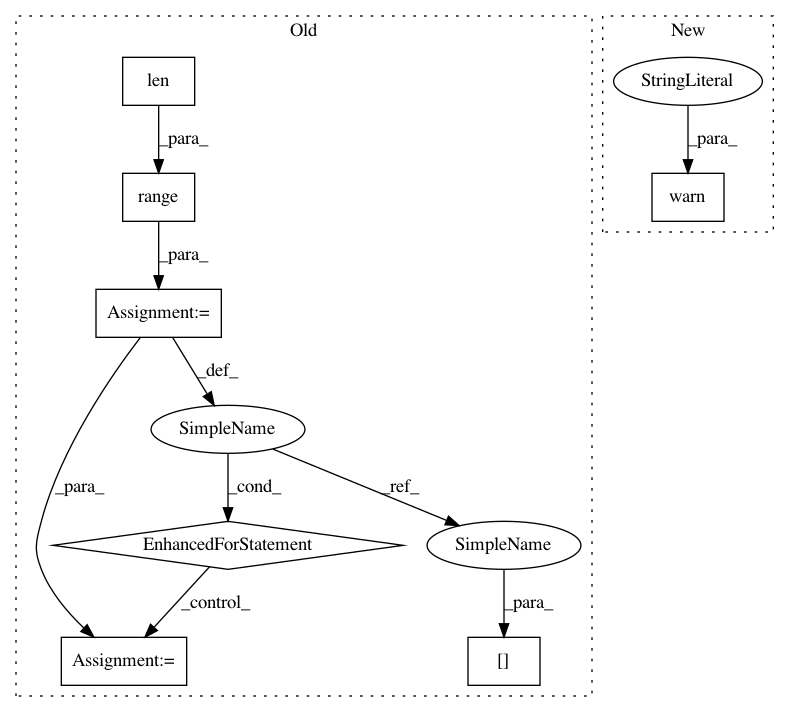

66db34cbcd90ada3fc8727097a413f440a0f53cc,tslearn/svm.py,TimeSeriesSVC,support_vectors_time_series_,#TimeSeriesSVC#Any#,249
Before Change
X_ = to_time_series_dataset(X)
sv = []
idx_start = 0
for cl in range(len(self.svm_estimator_.n_support_)):
idx_end = idx_start + self.svm_estimator_.n_support_[cl]
indices = self.svm_estimator_.support_[idx_start:idx_end]
sv.append(X_[indices])
idx_start += self.svm_estimator_.n_support_[cl]
return sv
def fit(self, X, y, sample_weight=None):
sklearn_X, y = self._preprocess_sklearn(X, y, fit_time=True)
After Change
def support_vectors_time_series_(self, X=None):
if X is not None:
warnings.warn("The use of "
"`support_vectors_time_series_` is deprecated in "
"tslearn v0.4 and will be removed in v0.6. Use "
"`support_vectors_` property instead.")
check_is_fitted(self, "_X_fit")
return self._X_fit[self.svm_estimator_.support_]
@property
In pattern: SUPERPATTERN
Frequency: 3
Non-data size: 7
Instances
Project Name: rtavenar/tslearn
Commit Name: 66db34cbcd90ada3fc8727097a413f440a0f53cc
Time: 2020-05-22
Author: romain.tavenard@univ-rennes2.fr
File Name: tslearn/svm.py
Class Name: TimeSeriesSVC
Method Name: support_vectors_time_series_
Project Name: ilastik/ilastik
Commit Name: bb6bb8f02d99a871e67e06a752e67a801d45773f
Time: 2013-02-26
Author: bergs@janelia.hhmi.org
File Name: ilastik/applets/objectExtraction/objectExtractionSerializer.py
Class Name: SerialObjectFeaturesSlot
Method Name: serialize
Project Name: Qiskit/qiskit-aqua
Commit Name: ad603ee61e78db5109b5ff9a460215d2aa9b9374
Time: 2019-08-26
Author: chenrich@us.ibm.com
File Name: qiskit/aqua/translators/ising/partition.py
Class Name:
Method Name: get_partition_qubitops
Project Name: rtavenar/tslearn
Commit Name: 66db34cbcd90ada3fc8727097a413f440a0f53cc
Time: 2020-05-22
Author: romain.tavenard@univ-rennes2.fr
File Name: tslearn/svm.py
Class Name: TimeSeriesSVC
Method Name: support_vectors_time_series_